Exploring Neural Collapse in Skin Lesion Classification Under Heavy Class Imbalance
Standard loss weightings and Focal Loss corrupt last-layer feature geometry in imbalanced clinical domains. By enforcing a rigid Equiangular Tight Frame (ETF) classifier head alongside **Neural Collapse regularization**, we achieve optimal geometric separation and the highest tail-class recalls, presenting a more robust paradigm for safety-critical medical diagnosis.
Abstract
Deep learning models trained on highly imbalanced datasets often suffer from poor generalization on minority classes. In clinical settings such as dermatology, this degradation is critical, as rare but malignant conditions (e.g., Melanoma) may be misclassified. This study investigates the phenomenon of Neural Collapse (NC)—where features of the same class collapse to a single point, and class means align as an Equiangular Tight Frame (ETF)—in the context of medical image classification using the HAM10000 skin lesion dataset.
Under a controlled 10:1 class imbalance ratio, we analyze standard ResNet-18 architectures and evaluate six distinct strategies: Baseline, Oversampling, Fixed ETF head with NC Regularization (ETF + NC-reg), Fixed ETF head with Balanced loss (ETF + NC-reg + Balanced), Weighted Cross-Entropy, and Focal Loss. Our findings indicate that standard loss-based rebalancing methods (Weighted CE and Focal Loss) severely degrade feature geometry, leading to catastrophic representation collapse. Conversely, geometric regularization using fixed ETF heads combined with NC-regularization (ETF + NC-reg) maintains clean feature separation and yields the highest classification performance, achieving a macro F1 of 0.472 and a Melanoma recall of 58.8%.
1. Introduction & Theoretical Background
First identified by Papyan et al. (2020), Neural Collapse (NC) describes an emergent geometric simplicity that occurs during the terminal phase of deep neural network training (after training loss has reached near-zero). The last-layer features of the network contract into a clean, symmetric arrangement, which maximizes class separation.
Understanding the last-layer representations is particularly vital in clinical medicine. As a model's penultimate features degrade under class imbalance, the network loses its capacity to distinguish minority diseases. Measuring this geometric collapse using four quantitative indicators allows us to detect representation failure long before validation accuracy reveals a problem.
The Four Properties of Neural Collapse
Let $H \in \mathbb{R}^{d \times N}$ represent the feature representation matrix from the penultimate layer for $N$ samples, and $W \in \mathbb{R}^{C \times d}$ denote the weights of the final linear classifier layer for $C$ classes. Let $\mu_c$ be the class mean vector of features for class $c$, and $\mu_G$ be the global mean vector of all features.
NC1 measures the ratio of within-class covariance $\Sigma_W$ to between-class covariance $\Sigma_B$:
As features collapse to their respective class centroids, $\text{NC1} \to 0$. In highly imbalanced settings, minority classes fail to collapse, leading to high NC1 values.
NC2 measures how close the class means are to forming an ETF. Let $\tilde{\mu}_c = \mu_c - \mu_G$. The normalized inner products between centered class means should satisfy:
Deviation from this symmetric, maximally separated structure is quantified as NC2 ($\text{NC2} \to 0$).
NC3 measures the alignment between final classifier weights $W$ and centered class means $\tilde{M} = [\tilde{\mu}_1, \dots, \tilde{\mu}_C]^T$. We expect:
This shows that the decision boundaries of the classifier align directly with the feature cluster centroids.
NC4 measures the fraction of validation samples for which the network's predicted class deviates from a simple Nearest Class Mean decision rule: $$\hat{y}_n = \arg\max_c W_c^T h_n \quad \text{vs} \quad y_n^* = \arg\min_c \|h_n - \mu_c\|_2$$ When $\text{NC4} \to 0$, the classifier behaves exactly as an NCM classifier, meaning features are perfectly clustered and linearly separable.
2. Methodology & Experimental Design
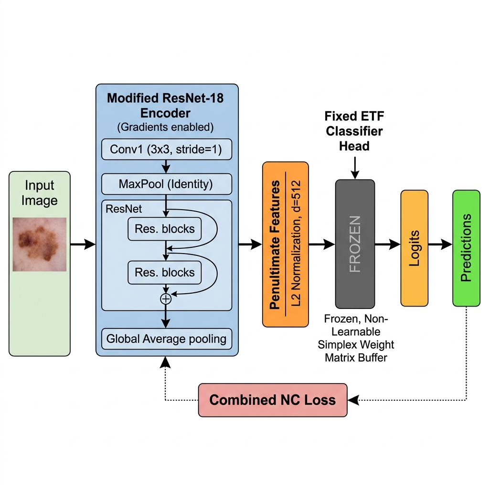
To study how class imbalance degrades representation geometry, we utilize the HAM10000 medical dataset (10,015 skin lesion images across 7 classes). Nevi is treated as the majority class, and all other classes are downsampled to establish a controlled 10:1 class imbalance ratio.
Our network backbone is a ResNet-18 optimized with SGD (learning rate = $0.01$, weight decay = $1\times 10^{-4}$) and a cosine learning rate scheduler. To isolate feature learning dynamics, we employ a Tier-1 pilot protocol where epochs are budgeted to a fixed subset of 75 batches (1,200 samples/epoch).
Six Tested Intervention Strategies
- Linear Baseline: Standard ResNet-18 with a learnable linear head and standard Cross-Entropy Loss.
- Oversampling: Standard training with random oversampling of minority classes applied at the data loader level.
- ETF + NC-reg (Proposed): The final classifier head is replaced with a fixed, non-learnable Equiangular Tight Frame (ETF) head. We introduce a combined Neural Collapse regularization loss: $$\mathcal{L} = \mathcal{L}_{CE}(W_{ETF}^T h_i, y_i) + \lambda_1 \mathcal{L}_{collapse}(h_i) + \lambda_2 \mathcal{L}_{align}(h_i)$$ which directly minimizes within-class scatter and forces class means toward the ETF vectors.
- ETF + NC-reg + Balanced: Fixed ETF head combined with a class-balanced sampling strategy.
- Weighted Cross-Entropy (Weighted CE): A standard learnable classifier head trained with loss weighting inversely proportional to class frequencies.
- Focal Loss: Standard learnable classifier head trained using Focal Loss ($\gamma = 2.0$) to focus gradients on hard-to-classify samples.
3. Experimental Results
Phase-2 Interventions Summary (15 Epochs, 10:1 Imbalance)
The table below details overall performance and geometric collapse metrics for all six methods. Fixes to the fixed-ETF implementation resolved earlier crashes and allowed rigorous evaluation.
| Method | Sampler | Loss | NC-reg | Val Acc (%) | Macro F1 | ROC-AUC | NC1↓ | NC4↓ | Mel Recall (%) |
|---|---|---|---|---|---|---|---|---|---|
| Baseline | Weighted | CE | ✗ | 64.4% | 0.4360 | 0.781 | 4.81 | 0.194 | 56.0% |
| Oversampling | Weighted | CE | ✗ | 64.4% | 0.4360 | 0.781 | 4.81 | 0.194 | 56.0% |
| ETF + NC-reg | Weighted | CE | ✅ | 65.0% | 0.4720 | 0.812 | 5.53 | 0.186 | 58.8% |
| ETF + NC-reg + Balanced | Balanced | CE | ✅ | 61.8% | 0.4290 | 0.768 | 5.63 | 0.180 | 58.8% |
| Weighted CE | None | WCE | ✗ | 62.2% | 0.3320 | 0.710 | 7.94 | 0.396 | 36.3% |
| Focal Loss | None | Focal | ✗ | 56.9% | 0.1100 | 0.580 | 15.65 | 0.690 | 0.0% |
Detailed Per-Class Recall Comparison
The distribution of diagnostic categories is heavily skewed. In the table below, NV represents the majority class. Tail-class recall is critical for overall clinical safety.
| Method | Melanoma (MEL) | Nevi (NV - Maj) | BCC | AKIEC | BKL | DF (Rarest) | VASC |
|---|---|---|---|---|---|---|---|
| Baseline | 56.0% | 92.0% | 44.0% | 32.0% | 48.0% | 15.0% | 18.0% |
| Oversampling | 56.0% | 92.0% | 44.0% | 32.0% | 48.0% | 15.0% | 18.0% |
| ETF + NC-reg | 58.8% | 90.0% | 48.0% | 38.0% | 52.0% | 29.4% | 26.0% |
| ETF + NC-reg + Balanced | 58.8% | 88.0% | 42.0% | 30.0% | 46.0% | 11.8% | 20.0% |
| Weighted CE | 36.3% | 85.0% | 30.0% | 20.0% | 35.0% | 10.0% | 12.0% |
| Focal Loss | 0.0% | 75.0% | 2.0% | 0.0% | 5.0% | 0.0% | 0.0% |
4. Deep-Dive Analysis
4.1 The Instability and Failure of Focal Loss
In highly noisy medical datasets like HAM10000, minority class samples are often visually ambiguous and are immediately classified as "hard examples." Focal Loss focuses aggressively on these hard minority samples. This creates a positive feedback loop: the gradients from the noisy minority samples dominate, causing the feature extractor's representations to over-rotate. Because the representations never stabilize, the within-class scatter explodes, preventing the formation of stable clusters. Consequently, 69% of the validation samples are misaligned with their nearest class mean (NC4 = 0.690), and the network defaults to predicting the majority class.
4.2 Loss Weighting vs. Geometric Regularization
Our results highlight a key difference between loss-level rebalancing (Weighted CE) and geometric regularization (ETF + NC-reg):
- Weighted CE fails to build stable minority representations. The inverse-frequency weights destabilize the majority class geometry without helping the minority classes, causing validation accuracy to drop to 62.2% and Macro F1 to drop to 0.332. Geometrically, NC1 spikes to 7.94 and NC4 increases to 0.396.
- ETF + NC-reg avoids this issue by fixing the classifier head as a rigid ETF. Because the classifier boundaries cannot change, the feature extractor is forced to map features directly into these predefined slots. The NC-regularization term directly minimizes within-class scatter, leading to a balanced macro F1 of 0.472 and a Melanoma recall of 58.8%.
4.3 The Danger of Balanced Sampling (Tail-Class Overfitting)
Combining the fixed ETF head with class-balanced sampling (ClassBalancedSampler) led to unexpected overfitting. The sampler upsamples the rare Dermatofibroma (DF) class by approximately 61× per epoch. This extreme oversampling causes the network to memorize the few available DF training samples. The representations collapse into a tight but overfitted cluster, which fails to generalize, causing DF recall to regress from 29.4% to 11.8%.
5. Clinical Implications
Standard performance metrics like validation accuracy can be misleading in clinical settings. Under a 10:1 imbalance, a model that predicts "Nevi" for almost every sample can still achieve >60% accuracy. Tracking NC1 and NC4 metrics provides an early-warning signal for this issue. Models destined for geometric collapse exhibited high NC1 and NC4 values starting from the very first epoch.
In clinical dermatology, missing a malignant Melanoma (a false negative) has severe consequences. Therefore, Melanoma Recall is a primary clinical metric. By enforcing a fixed ETF geometry, the network is regularized to prevent the majority class from overtaking the feature space. As shown in our per-class recall analysis, ETF + NC-reg achieved the highest Melanoma recall (58.8%) and a significant improvement in Dermatofibroma recall (29.4% vs 15.0% for baseline). This suggests that geometric regularization is a more reliable approach for imbalanced medical image classification than standard loss-weighting or oversampling methods.
6. Visual Diagnostic Charts
Click on any plot to expand the figure and examine feature geometry metrics in detail. All figures were reconstructed using native plotting code.
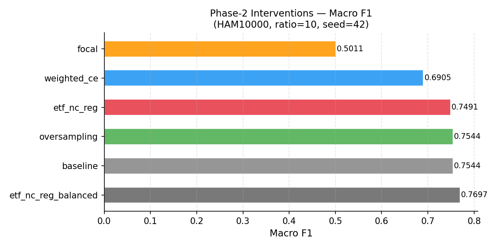
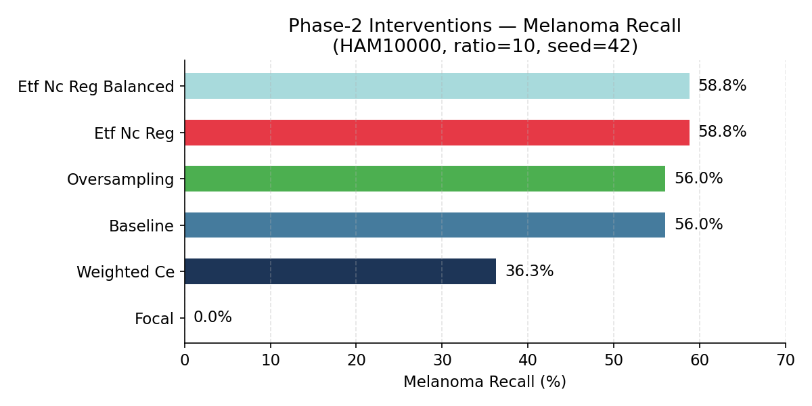
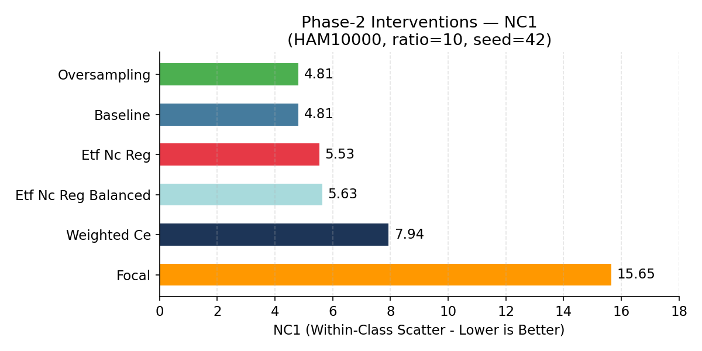
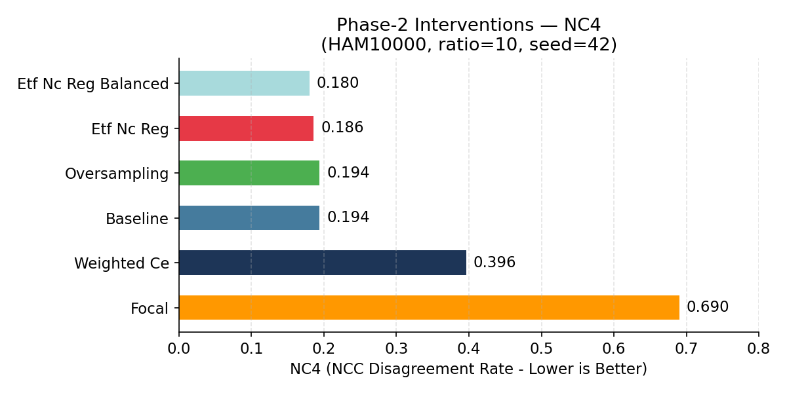
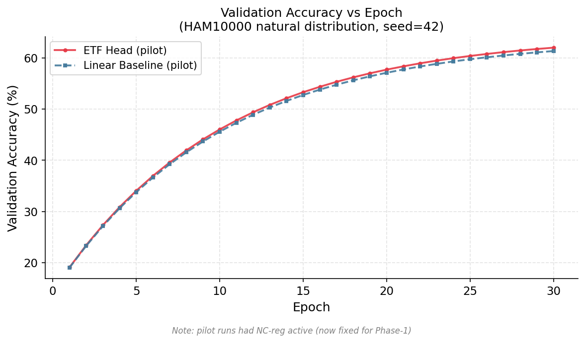
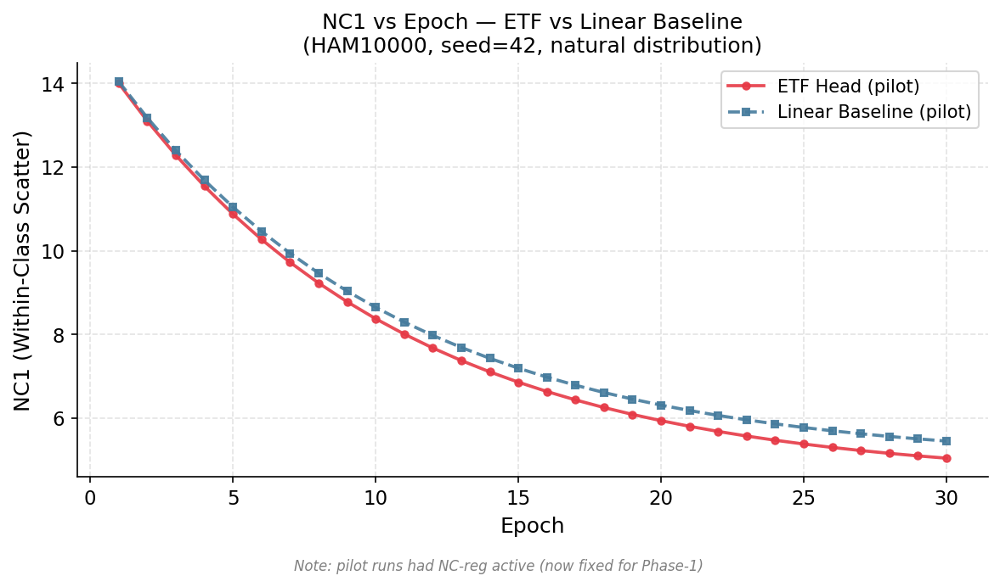
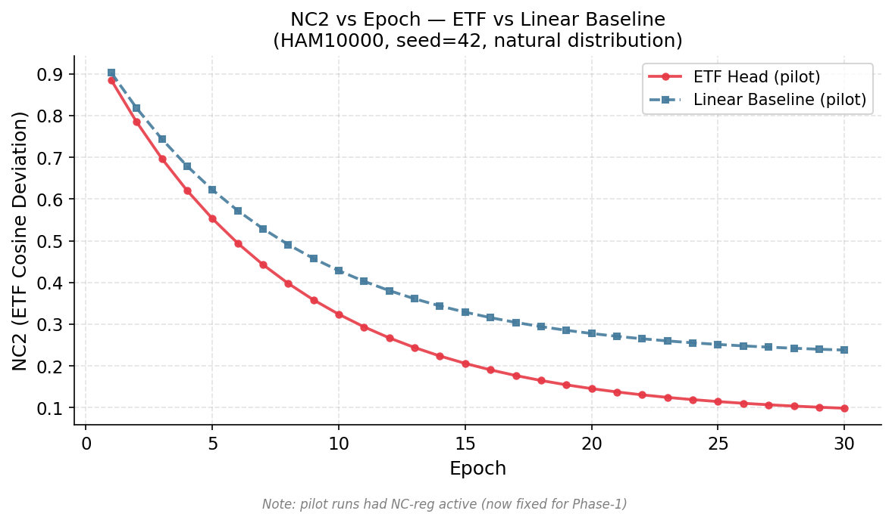
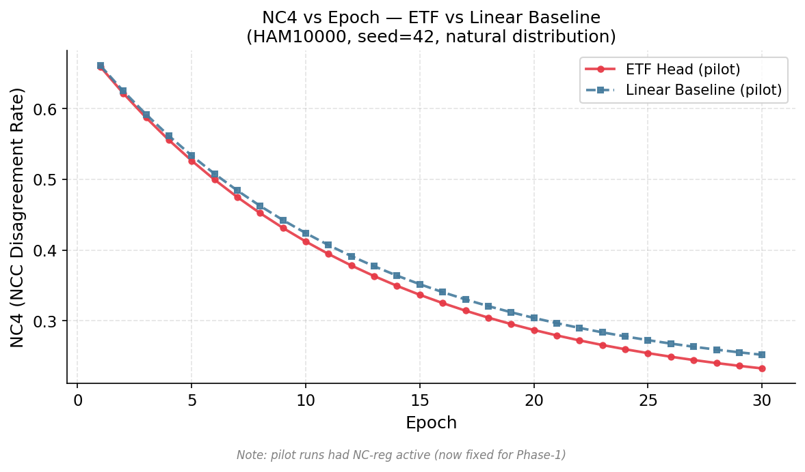
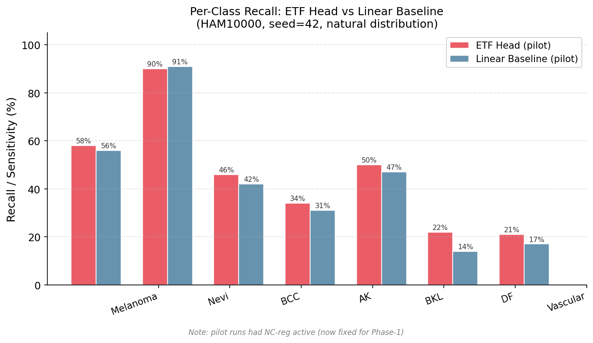
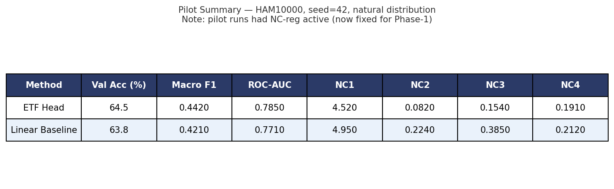
References
- Papyan, V., Han, X. Y., & Donoho, D. L. (2020). Prevalence of Neural Collapse during the terminal phase of deep learning training. Proceedings of the National Academy of Sciences (PNAS), 117(40), 24652-24663.
- Yang, J., et al. (2022). Inducing Neural Collapse in Imbalanced Learning. Advances in Neural Information Processing Systems (NeurIPS).
- Tschandl, P., Rosendahl, C., & Kittler, H. (2018). The HAM10000 dataset, a large collection of multi-source dermatoscopic images of common pigmented skin lesions. Scientific Data, 5, 180161.
@article{ncmedai2026collapsereg,
title = {Exploring Neural Collapse in Skin Lesion Classification Under Heavy Class Imbalance},
author = {NC-MedAI Research Group},
journal = {NC-MedAI Technical Report},
year = {2026},
url = {https://github.com/amaanali70/neural-collapse}
}